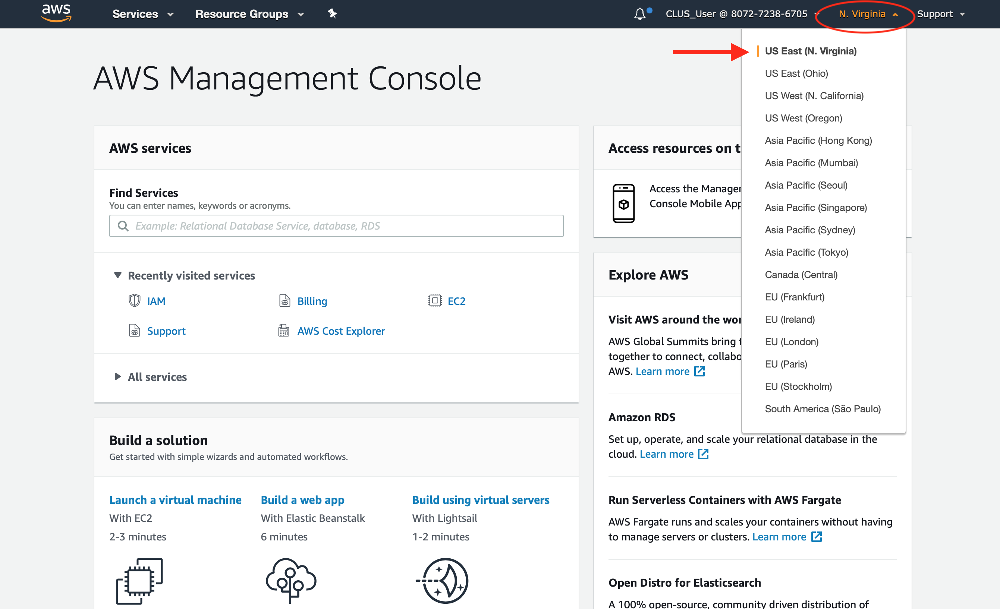
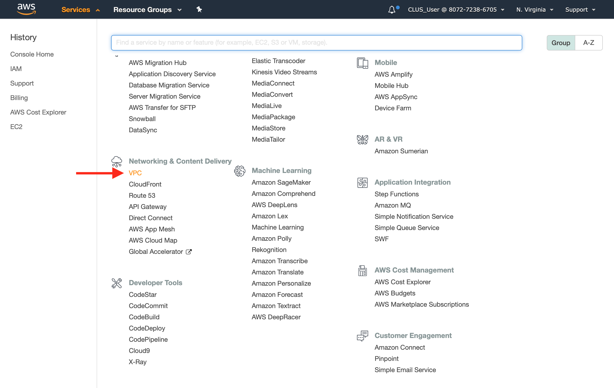
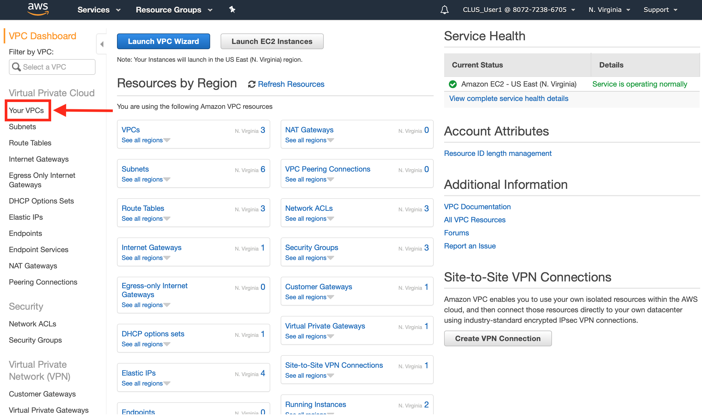
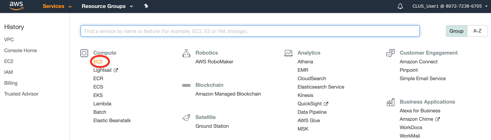

Task 7b - Configuring Cloud onRamp for IaaS
Cloud onRamp for IaaS allows remote branches and data centers with vEdge routers to connect directly to public cloud providers.
This Task will walk through the steps to configure Cloud OnRamp for IaaS that extends the fabric of the Viptela overlay network into public cloud instances.
As per previous steps, two (2) vEdges in Branch 1 and Branch 2 and one (1) vEdge in DC have been onboarded. This Task will add two (2) redundant vEdge Cloud routers which will act together as a transit betwwen SDWAN overlay network and public cloud instances.
Pre-requisite 1: SDWAN controllers must be fully operational. If those are not installed (or operational) then please complete the previous Tasks first.
Pre-requisite 2: Pre-configured three (3) vEdges (in Branch 1, Branch 2 and DC) must be fully operational. If those are not operational then please complete the previous Tasks first.
Pre-requisite 3: At least 2 unused vEdge Cloud devices with AWS templates attached should be available in vManage. This is to add new cloud instances. If those are not attached then please complete Task 7a first.
You configure and manage Cloud OnRamp for IaaS through the vManage. A configuration wizard in the vManage automates the bring-up the transit to your public cloud account and automates the connections between public-cloud and branches in SDWAN overlay network.
Step 1: Verify Cisco SDWAN and Viptela vEdge AMIs Subscription
In this step you will verify Cisco SDWAN and Viptela vEdge Amazon Machine Images (AMIs) subscription in AWS marketplace with your AWS user account in order to use the Cloud OnRamp for IaaS and other SDWAN services. You subscribe to these AMI only once.
To create a new AMI subscription:
Log on to AWS marketplace from a web browser (if not already open) and click on Sign In
https://aws.amazon.com/marketplace

Use credentials of the following:
- Account ID =
807272386705 - IAM user name =
CLUS_User##=1,2,3,...,16 - Password =
CLUS19
| Note |
|---|
The number sign # needs to be replaced by your pod number(#=1,2,3,...,16). Use given number while identifying your IAM user name. As an example for pod1 IAM user name should be CLUS_User1 |

- Search
Cisco SDWANand click Cisco vEdge Cloud Router from the list of results.
- Click Continue to Subscribe
- Verify you are already subscribed to this product.
- Do the same for Viptela vEdge Cloud Router

Step 2: Create host VPC in AWS
In this step we will create host VPC (Virtual Private Cloud) in respective AWS region which will be identified in next steps.
Log on to AWS from a web browser (if not already open) and click on Sign In to the Console
https://aws.amazon.com/console
Use credentials of the following:
- Account ID =
807272386705 - IAM user name =
CLUS_User##=1,2,3,...,16 - Password =
CLUS19
| Note |
|---|
The number sign # needs to be replaced by your pod number(#=1,2,3,...,16). Use given number while identifying your IAM user name. As an example for pod1 IAM user name should be CLUS_User1 |
Once connected to AWS Management Console, verify US East (N. Virginia) region is selected on the navigation bar. Please see below for details:
| Note: |
|---|
| Region Name= US East (N.Virginia) |
| Code Name= us-east-1 |
| Note: |
|---|
If you have created AWS resources, but you don’t see those resources in the console, the console might be displaying resources from a different Region. Please make sure to select US East (N.Virginia) region. Otherwise for any activity you try to execute, You are not authorized to perform this operation. message will pop-up. |
- Select region list from up-right corner of the console as shown below and select your respective region as US East (N. Virginia).

- Then click on
Serviceson the navigation pane and select VPC from Network & Content Delivery menu.

- Click on Your VPCs on the VPC navigation pane.

- and then click on
Create VPC
- Using
#=1,2,3,...,16create host VPC with following settings: - Name the host VPC as
SDWAN-hostVPC#
| Note |
|---|
The number sign # needs to be replaced by your IAM user name number(#=1,2,3,...,16). Use given number while identifying your host VPC. As an example for CLUS_User1 host VPC name should be SDWAN-hostVPC1 |
- Specify IPv4 CIDR block as
10.#.0.0/16 - Leave rest of the options as default and click on
Createand thenClose
- Verify host VPC SDWAN_hostVPC# is created.
Step 3: AWS API and Secret Keys
Different types of security credentials are used depending on how you interact with AWS. For example, you use a user name and password to sign in to the AWS Management Console. Additionally, you use access keys to make programmatic calls to AWS API operations or to use AWS CLI commands. We will use access keys in next step.
- The Access keys can be found in
accessKeys.csvfile within following box folder: https://bit.ly/2KcPg10
| Important Note: |
|---|
| If you do not have access keys then please contact lab instructors. |
Step 4: Configuring Cloud onRamp for IaaS for AWS
In this step we will configure Cloud OnRamp for IaaS through vManage for AWS and create AWS transit VPC, which consists of a pair of vEdge routers. You then map the transit VPC to host VPC that already exists in the AWS cloud created in Step 2.
Pre-requisite 1 At least 2 unused vEdge devices with templates attached should be available in vManage. This is to add new cloud instances. If those are not attached then please complete Task 7a first.
Pre-requisite 2 AWS API and Secret Keys should be known at this step. If not then please complete the previous step first.
- Log on the vManage from a web browser (if not already open) and use credentials of
adminandadmin:
https://198.18.1.10
| Note: |
|---|
If admin/admin credentials do not work then you may try using cisco/cisco or cisco1/cisco1 |
-
On the vManage GUI, navigate to Configuration > Cloud onRamp for IaaS.
-
We will use a configuration wizard in vManage that automates to bring-up vEdge Cloud routers using your AWS public cloud user account and automates the connections between public cloud and branches & DC in the SDWAN overlay network. Click on Add New Cloud Instance as shown below.
- In the Add Cloud Instance-Log In to a Cloud Server popup:
- Select amazon web services and Click on Login
- Select Key and open
accessKeys.csvfile.- Copy Access key ID from
accessKeys.csvfile and paste as API Key. - Copy Secret access key from
accessKeys.csvfile and paste as Secret Key - Close
accessKeys.csvfile. - Click
Login.
- Copy Access key ID from
| Important Note: |
|---|
If you can not locate accessKeys.csv in box folder, then please contact lab instructors. |
- Next, select your AWS region from Choose Region drop down menu in Select a Region and Create Transit VPCs step. A graphic on the right side of the screen illustrates the steps in the cloud instance configuration process. Steps not yet completed are shown in light gray. Completed steps are indicated with a green checkmark and are shown in light orange.
| Important Note: |
|---|
| Please make sure to select the right AWS region as us-east-1 (N. Virginia). If you are not sure which AWS region you are working in, then please complete Step 2 first. |
-
Next, enter Transit VPC and Device Information parameters as below:
- Using
#=1,2,3,...,16name the transit VPC asSDWAN-transitVPC# - Select
18.3.0as the WAN Edge Version from drop-down menu - Select
c4.large (2 vCPU)for Size of the Transit vEdge - Select
vEdge1 : uuidas Device 1 - Select
vEdge2 : uuidas Device 2 - Expand Advanced menu if you wish to enter more specific configuration options. For this lab, we will leave rest of the options as default and click on
Proceed to Discovery and Mappingto move forward.
- Using
| Note |
|---|
The number sign # needs to be replaced by your IAM user name number(#=1,2,3,...,16). Use given number while identifying your transit VPC. As an example for CLUS_User1 transit VPC name should be SDWAN-transitVPC1 |
- Discover Host VPCs step will allow you to select
807272386705from Select an account to discover list and then clickDiscover Host VPCs.
- On the next screen, please verify desired Host VPC in Discovered Host VPCs step which has been created in Step 2. Please see below screenshot for
CLUS_User1and discovered Host VPC isSDWAN-hostVPC1. Checkmark it and then clickNext.
| Important Notes: |
|---|
| Please make sure to select the right AWS region as us-east-1 (N. Virginia). If you are not sure which AWS region you are working in, then please complete Step 2 first |
| If you don’t see Host VPC in the console, then please complete the Step 2 first. |
- Next, Click
Map VPCsin Map Host VPCs to Transit VPCs step.
- The Map Host VPCs pop-up window opens, make sure following parameters are configured and then click
Map VPCs.- Using
#=1,2,3,...,16verify Transit VPC asSDWAN-transitVPC#. As an example, it should beSDWAN-transitVPC1forCLUS_User1 - Verify VPN as
10 - Enable Route Propagation to ensure that Transit VPC receives the routes.
- Using
- Now, you will see
SDWAN-hostVPC1is not checkmarked anymore, this is because Host VPC and Transit VPC are successfully mapped. To verify, make sure Mapping Status is green and then clickSave and Complete.
| Note: |
|---|
| The mapping process establishes IPsec and BGP connections between the transit VPC and host VPC. The IPsec tunnel that connects the transit and host VPC runs IKE to provide security for the connection. For AWS, the IPsec tunnel runs IKE Version 1. The BGP connection that is established over the secure IPsec tunnel allows the transit and host VPC to exchange routes so that the transit VPC can direct traffic from the branch to the proper host VPC, and hence to the proper cloud-based application. |
- Creating AWS resources such as Transit VPC, Internet Gateway, vEdge Cloud pair and setting up the infrastructure will take 10-15 minutes time. Progress can be tracked through Status and Message updates on vManage as shown below:
- In order to verify the progress from AWS Management Console, Click Services.

- Then select VPC from Networking & Content Delivery menu.

- You will see VPC Dasboard which provides a summary of provisioned resources by your region. Click VPCs
- As shown below Transit VPC is now created on AWS of
SDWAN-transitVPC1during Cloud onRamp for IaaS task is still running.
- on vManage GUI, review provisioning vEdge Cloud routers for Transit VPC.
- In order to verify vEdge Cloud instances in AWS, go back to AWS Management Console and Click
Services
- Select EC2 from Compute menu

- Select Instances
- Verify vEdge Cloud instances are Initializing status meaning that vEDge Cloud instances status checks are still in progress.
| Note: |
|---|
| There are two types of status checks: system status checks and instance status checks. |
| System Status Checks detect underlying problems with your instance. Instance Status Checks monitor the software and network configuration of your individual instance. |
- Once Status Checks are updated as 2/2 checks passed, this means vEdge Cloud router provisioning is completed successfully.
- On the vManage GUI, verify that Cloud onRamp for IaaS task has been completed successfully.

| Important Note: |
|---|
| Below is a sample list of messages created by Cloud onRamp for IaaS task to provision AWS resources and a screenshot from vManage > Configuration > Cloud onRamp for IaaS GUI. |
[12-Jan-2019 15:07:13 UTC] Creating gateway vpc/vnet:SDWAN-transitVPC1
[12-Jan-2019 15:07:16 UTC] Creating Transit VPC in region: us-east-2 for account 807272386705
[12-Jan-2019 15:07:23 UTC] Setting up an internet gateway for Transit VPC: vpc-0319a79c86b56b022
[12-Jan-2019 15:07:29 UTC] Created vpc: vpc-0319a79c86b56b022, igw: igw-0ccb98a2a83f068d9
[12-Jan-2019 15:07:29 UTC] Creating vEdge pair for Transit VPC: vpc-0319a79c86b56b022
[12-Jan-2019 15:10:04 UTC] Done creating two vEdges: ['i-07852d85c955152cb', 'i-0d2dc55af857caa07'] in Transit VPC: vpc-0319a79c86b56b022
[12-Jan-2019 15:10:09 UTC] Mapping Host VPC in account 807272386705 to Transit VPC in account 807272386705
[12-Jan-2019 15:10:09 UTC] Region : us-east-2
[12-Jan-2019 15:10:10 UTC] Setting up host VPC: vpc-019310fca7f411e13
[12-Jan-2019 15:10:11 UTC] Creating virtual private gateway
[12-Jan-2019 15:10:15 UTC] Created virtual private gateway: vgw-03b9cc1782fd775b4
[12-Jan-2019 15:12:02 UTC] Enabled route propagation on vgw-03b9cc1782fd775b4
[12-Jan-2019 15:12:04 UTC] Created cgw-013db59e2c4fea191
[12-Jan-2019 15:12:05 UTC] Setting up vpn connections between host VPC vpc-019310fca7f411e13 and Transit VPC vpc-0319a79c86b56b022
[12-Jan-2019 15:18:45 UTC] Created vpn connection: vpn-0c4a20a8dddc5359d
[12-Jan-2019 15:18:46 UTC] Enabled route propagation on vgw-03b9cc1782fd775b4
[12-Jan-2019 15:18:48 UTC] Created cgw-0fe99917304e7ed7f
[12-Jan-2019 15:18:48 UTC] Setting up vpn connections between host VPC vpc-019310fca7f411e13 and Transit VPC vpc-0319a79c86b56b022
[12-Jan-2019 15:25:01 UTC] Created vpn connection: vpn-097e752fbbc701b21
[12-Jan-2019 15:25:01 UTC] Done creating vpn connections between host VPC vpc-019310fca7f411e13 and transit VPC vpc-0319a79c86b56b022
[12-Jan-2019 15:25:01 UTC] Completed mapping host vpc(s)
- Configuration > Cloud onRamp for Iaas GUI final view will be as shown below.
This concludes the process to onboard two (2) vEdge Cloud routers in AWS and configure Cloud onRamp for Iaas for AWS.